Building on the IoT tasks above, I built a hosted, login-protected Firebase dashboard for the same ESP32 setup — one task to stand up the Firebase project itself (hosting, authentication, database and cloud-computing concepts), and one to get the ESP32's real sensor data, bulb control, historical logging and CSV export actually flowing into it live.
The goal of this task was to stand up a complete Firebase-backed web app — hosting, a login screen, and a database to hold live sensor data — before wiring up any hardware at all. The problem being solved is giving an IoT device a cloud-hosted, login-protected home: a dashboard reachable from any browser, anywhere, that can display live readings and accept control commands, backed by a database that keeps a history of everything, not just the latest value. I wanted the dashboard itself fully working and deployed first, so Task 5 could focus purely on getting real data flowing into it.
Cloud computing means using computing resources — servers, storage, databases, networking — that are owned and run by someone else (here, Google, through Firebase) and rented over the internet, instead of buying and maintaining physical servers. For this project it means the dashboard's files, the login system, and the database all run on Google's infrastructure. I only write code and configuration; Google handles the servers, uptime, scaling and security patching underneath.
| Model | What it gives you | Example |
|---|---|---|
| IaaS (Infrastructure as a Service) | Raw virtual machines, storage and networking — you manage the OS and everything above it | Google Compute Engine, AWS EC2 |
| PaaS (Platform as a Service) | A ready-made platform to deploy your own application code onto, without managing servers | Google App Engine, Heroku |
| SaaS (Software as a Service) | A complete, ready-to-use application you just log into | Gmail, Google Docs |
| BaaS (Backend as a Service) | Ready-made backend building blocks — auth, database, hosting, storage — that your own frontend code calls directly | Firebase (used in this project) |
A cloud platform is a provider's full set of hosted services — compute, storage, databases, authentication, networking — offered together under one account and one console, so an application can be built almost entirely from managed pieces instead of custom infrastructure. Firebase is Google's cloud platform for app backends.
A database is organized, persistent storage for data that can be queried, updated and retrieved reliably over time, instead of being held only in a program's memory (which disappears the moment the device restarts). Databases are broadly either relational / SQL (data in fixed tables with rows and columns, related by keys) or non-relational / NoSQL (more flexible structures such as documents or trees). Firebase's Realtime Database is a NoSQL, JSON-tree-structured database.
The Firebase Realtime Database stores data as one large JSON tree, rather than tables. Any client — the dashboard's JavaScript or the ESP32's firmware — can read or write to a specific path in that tree (for example /current/temperature), and every other client that has an active listener on that path (or a parent of it) is pushed the updated value within about a second, over a persistent WebSocket connection. That live push is what makes the dashboard update without the browser ever refreshing the page.
A cloud-based dashboard is a web interface, hosted remotely rather than run from a single device, that reads live and historical data from a cloud backend and presents it visually — cards, tables, charts — while also sending commands back to that same backend. Because it's reached over the internet rather than the local network (unlike Task 1's web server), it can be opened from any browser, on any device, anywhere, as long as the person logs in.
Authentication is the process of proving who is making a request — in this project, proving that whoever opened the dashboard URL is actually an account I added, by checking an email and password against Firebase Authentication. The purpose of a login system here is straightforward: the dashboard shows live sensor readings and can switch a real 230V bulb, so it should not be reachable or controllable by anyone who simply discovers the Hosting URL.
| Authentication | Authorization | |
|---|---|---|
| Question answered | "Who are you?" | "What are you allowed to do?" |
| When it happens | At login — email + password are checked | After login — every read/write request is checked against rules |
| In this project | Firebase Authentication verifying the email/password on the login page | Realtime Database security rules deciding whether a signed-in user can read/write /current, /history, /settings and /control |
"auth != null" in this project's rules) permit.Both clients — the browser dashboard and the ESP32 — talk to the same Firebase project: Authentication to prove identity, the Realtime Database to read/write data, and Hosting to serve the dashboard's files.
I started in the Firebase console and created a brand new project, naming it Smart IoT Monitoring. This project became the home for everything else in this task — Hosting, Authentication, and the Realtime Database all live under it.
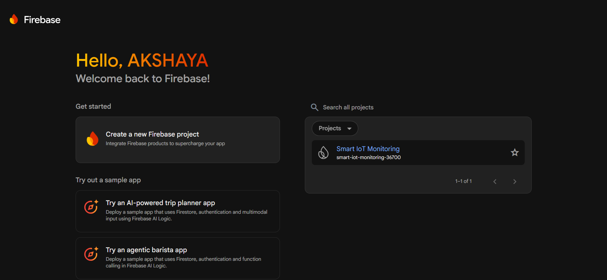
Next, I registered a web app inside the project, which gave me a Firebase configuration snippet — apiKey, authDomain, projectId, storageBucket, messagingSenderId and appId. This is the key that lets both the web dashboard and, later, the ESP32 firmware talk to this specific Firebase project.
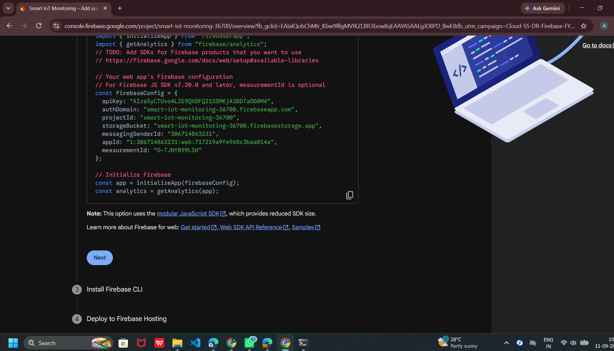
On my machine, I checked my Node.js and npm versions, then installed the Firebase CLI globally with npm install -g firebase-tools. Once installed, I confirmed the version with firebase --version and logged into my Firebase account with firebase login.
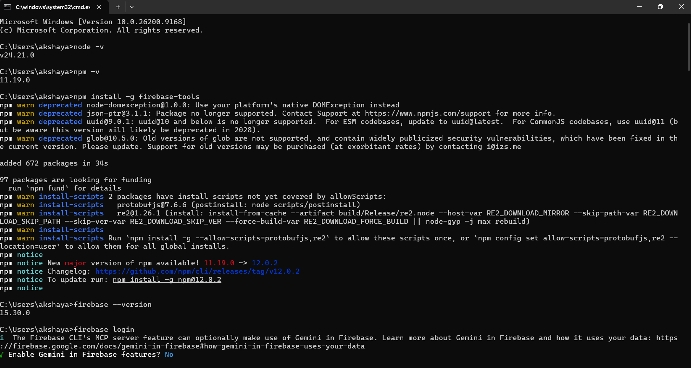
I confirmed the project existed from the CLI's point of view with firebase projects:list, then created a dedicated folder for the hosting files — Smart-IoT-Monitoring inside my Desktop — and ran firebase init hosting from inside it. I linked it to the existing Smart IoT Monitoring project, set public as the hosting directory, and declined the single-page-app rewrite and GitHub Actions options since I didn't need them.
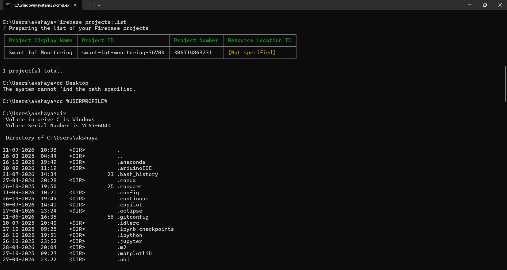
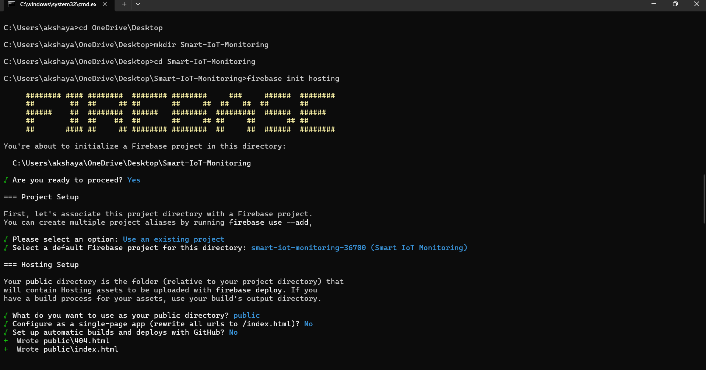
After testing the hosting files locally, I deployed everything with firebase deploy. The CLI uploaded the files, finalized a new hosting version, and released it — giving me a live Hosting URL for the dashboard.
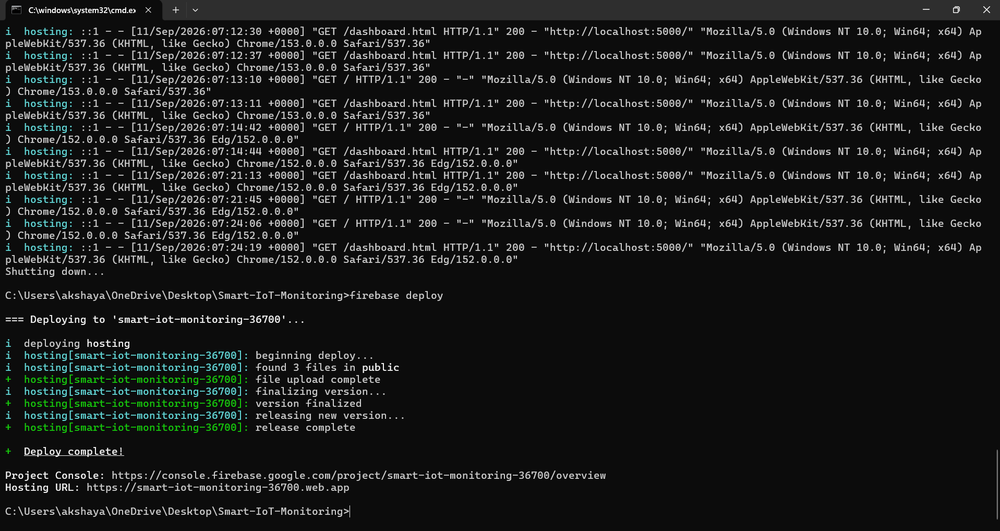
For the login screen, I enabled the Email/Password sign-in provider under Authentication → Sign-in method, then added the specific user accounts allowed to access the dashboard under Authentication → Users. No public sign-up form exists anywhere in the app — accounts are only ever added from the Firebase console, which is deliberate: the dashboard controls a real appliance, so I wanted account creation to stay fully under my control rather than self-service.
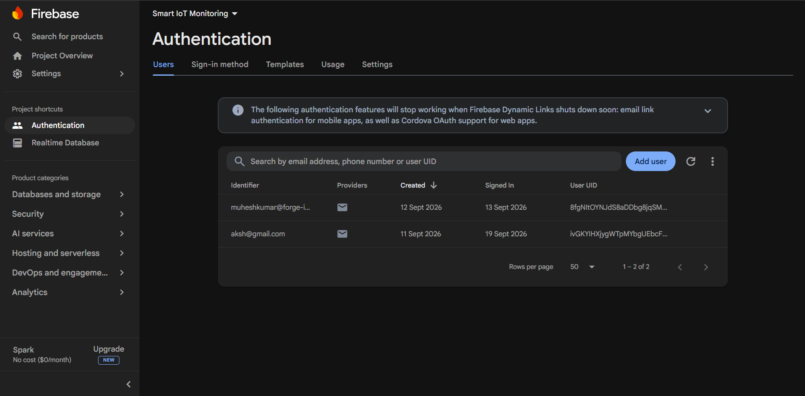
The database is organized into four top-level nodes, each with a clear, single job:
| Node | Holds | Written by | Read by |
|---|---|---|---|
/current | The latest snapshot — temperature, humidity, ldr, bulbStatus, mode, lastUpdated | ESP32 (every ~2s) | Dashboard (live cards) |
/history | One pushed entry per reading cycle — the same fields, plus a server timestamp — used for the table, chart and CSV export | ESP32 | Dashboard (history table, chart, CSV) |
/settings | mode ("manual"/"auto") and ldrThreshold | Dashboard | ESP32 |
/control | bulbCommand — the manual on/off command | Dashboard | ESP32 (streamed) |
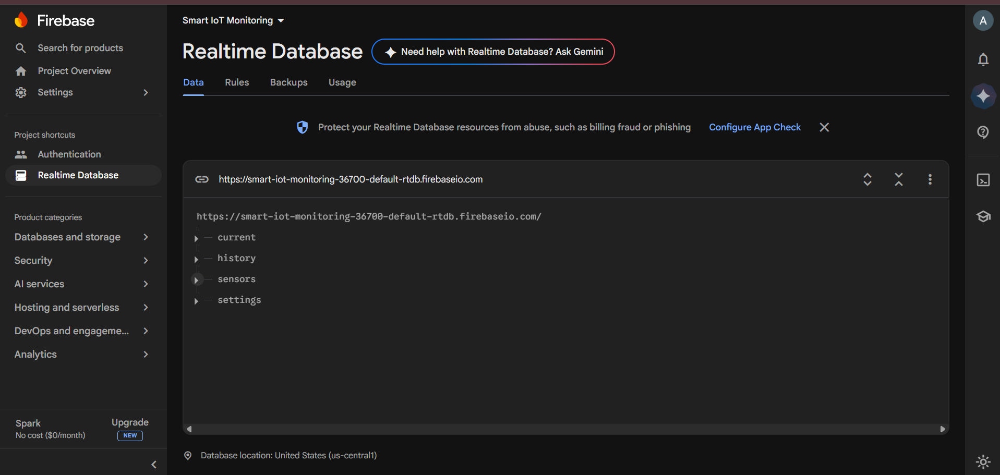
The dashboard is a static site (served by Firebase Hosting) made of a login page, a dashboard page, and shared JavaScript that talks to Firebase Authentication and the Realtime Database. The same files serve both Task 4 (login + live cards) and Task 5 (manual/automatic control, history table, chart and CSV export).
// Shared Firebase initialization, loaded by both login.html and dashboard.html
const firebaseConfig = {
apiKey: "YOUR_FIREBASE_API_KEY",
authDomain: "smart-iot-monitoring.firebaseapp.com",
databaseURL: "https://smart-iot-monitoring-default-rtdb.firebaseio.com",
projectId: "smart-iot-monitoring",
storageBucket: "smart-iot-monitoring.appspot.com",
messagingSenderId: "YOUR_SENDER_ID",
appId: "YOUR_APP_ID"
};
firebase.initializeApp(firebaseConfig);
const auth = firebase.auth();
const db = firebase.database();<!-- login.html -->
<form id="loginForm">
<input id="email" type="email" placeholder="Email" required>
<input id="password" type="password" placeholder="Password" required>
<button type="submit">Sign In</button>
<p id="loginError" class="error"></p>
</form>// login.js
document.getElementById('loginForm').addEventListener('submit', function (e) {
e.preventDefault();
const email = document.getElementById('email').value.trim();
const password = document.getElementById('password').value;
const errorBox = document.getElementById('loginError');
errorBox.textContent = '';
auth.signInWithEmailAndPassword(email, password)
.then(() => { window.location.href = 'dashboard.html'; })
.catch((err) => { errorBox.textContent = 'Login failed: ' + err.message; });
});
// Already signed in? skip straight to the dashboard instead of showing the form again
auth.onAuthStateChanged((user) => {
if (user) window.location.href = 'dashboard.html';
});// Auth guard — bounce back to the login page if nobody is signed in
auth.onAuthStateChanged((user) => {
if (!user) { window.location.href = 'login.html'; return; }
document.getElementById('userEmail').textContent = user.email;
});
document.getElementById('logoutBtn').addEventListener('click', () => auth.signOut());
// ---- Live "current" readings (Task 4 cards) ----
db.ref('current').on('value', (snap) => {
const d = snap.val() || {};
document.getElementById('tempValue').textContent = (d.temperature ?? '--') + ' °C';
document.getElementById('humidityValue').textContent = (d.humidity ?? '--') + ' %';
document.getElementById('ldrValue').textContent = d.ldr ?? '--';
document.getElementById('bulbStatus').textContent = d.bulbStatus ? 'ON' : 'OFF';
document.getElementById('modeValue').textContent = (d.mode || 'manual').toUpperCase();
document.getElementById('lastUpdated').textContent =
d.lastUpdated ? new Date(d.lastUpdated).toLocaleTimeString() : '--';
});
// ---- Manual bulb control (Task 5) ----
document.getElementById('bulbOnBtn').addEventListener('click', () => {
db.ref('settings/mode').set('manual');
db.ref('control/bulbCommand').set(true);
});
document.getElementById('bulbOffBtn').addEventListener('click', () => {
db.ref('settings/mode').set('manual');
db.ref('control/bulbCommand').set(false);
});
// ---- Automatic mode toggle + LDR threshold (Task 5) ----
document.getElementById('modeToggle').addEventListener('change', (e) => {
db.ref('settings/mode').set(e.target.checked ? 'auto' : 'manual');
});
document.getElementById('thresholdForm').addEventListener('submit', (e) => {
e.preventDefault();
db.ref('settings/ldrThreshold').set(Number(document.getElementById('thresholdInput').value));
});
// ---- Historical data: table + chart (Task 5) ----
let historyChart;
db.ref('history').limitToLast(50).on('value', (snap) => {
const rows = [];
snap.forEach((child) => rows.push({ id: child.key, ...child.val() }));
renderHistoryTable(rows);
renderHistoryChart(rows);
window.__historyRows = rows; // kept in memory for CSV export
});
function renderHistoryTable(rows) {
const tbody = document.getElementById('historyBody');
tbody.innerHTML = rows.slice().reverse().map((r) => `
<tr>
<td>${new Date(r.timestamp).toLocaleString()}</td>
<td>${r.temperature} °C</td>
<td>${r.humidity} %</td>
<td>${r.ldr}</td>
<td>${r.bulbStatus ? 'ON' : 'OFF'}</td>
<td>${(r.mode || '').toUpperCase()}</td>
</tr>`).join('');
}
function renderHistoryChart(rows) {
const labels = rows.map((r) => new Date(r.timestamp).toLocaleTimeString());
const data = {
labels,
datasets: [
{ label: 'Temperature (°C)', data: rows.map((r) => r.temperature), borderColor: '#f97316', tension: .3 },
{ label: 'Humidity (%)', data: rows.map((r) => r.humidity), borderColor: '#38bdf8', tension: .3 },
{ label: 'Light (LDR)', data: rows.map((r) => r.ldr), borderColor: '#facc15', tension: .3 }
]
};
const ctx = document.getElementById('historyChart').getContext('2d');
if (historyChart) { historyChart.data = data; historyChart.update(); return; }
historyChart = new Chart(ctx, { type: 'line', data, options: { responsive: true } });
}
// ---- CSV export (Task 5) ----
document.getElementById('downloadCsvBtn').addEventListener('click', () => {
const rows = window.__historyRows || [];
const header = ['Timestamp', 'Temperature (C)', 'Humidity (%)', 'LDR', 'Bulb Status', 'Mode'];
const body = rows.map((r) => [
new Date(r.timestamp).toISOString(), r.temperature, r.humidity, r.ldr,
r.bulbStatus ? 'ON' : 'OFF', r.mode
].join(','));
const csv = [header.join(','), ...body].join('\n');
const blob = new Blob([csv], { type: 'text/csv' });
const url = URL.createObjectURL(blob);
const a = document.createElement('a');
a.href = url;
a.download = `iot-history-${Date.now()}.csv`;
a.click();
URL.revokeObjectURL(url);
});{
"rules": {
".read": "auth != null",
".write": "auth != null"
}
}These rules are the authorization half of the system: Authentication proves who signed in, and these rules then decide that any signed-in user — and only a signed-in user, which includes the ESP32 once it signs in with its own account — may read or write anywhere in the database.
With everything deployed, visiting the live Hosting URL now showed a proper login screen for Smart IoT Monitoring, requiring an email and password before anyone could see the dashboard behind it.
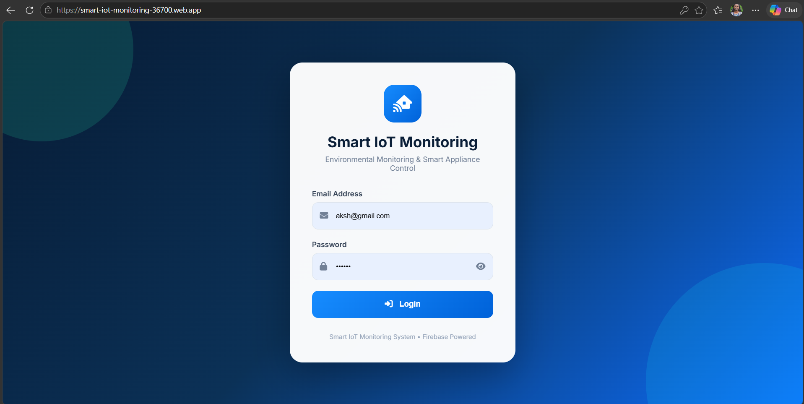
After logging in, the dashboard itself was ready — Temperature, Humidity, Ambient Light and Bulb Status cards, an Appliance Control panel for manual/automatic bulb control, and a System Status panel. At this point it was still waiting on real hardware: the values all showed as placeholders, since no ESP32 was sending data yet. That's exactly where Task 5 picks up.
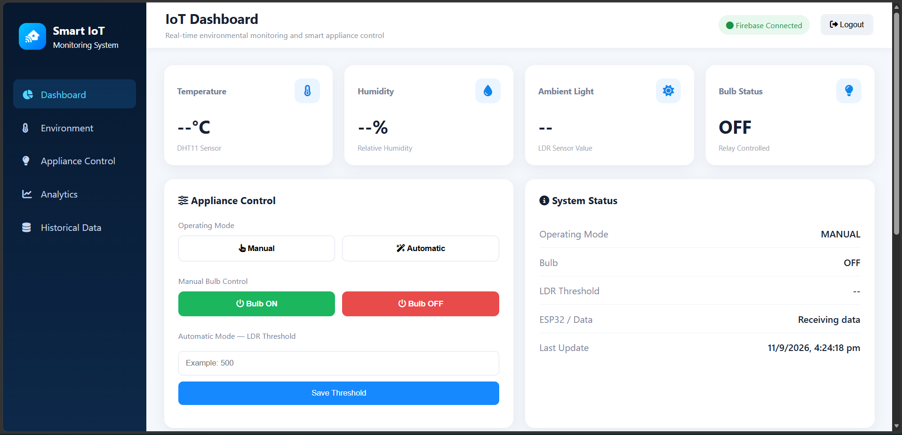
The full login → dashboard → live-data workflow is demonstrated together with the hardware in Task 5's videos below, since the dashboard only becomes meaningful once real readings are flowing into it. A dedicated walkthrough of just the login and navigation flow will go here once recorded.
| Problem | Cause | Solution |
|---|---|---|
firebase deploy uploaded the wrong folder | Hosting's public directory didn't match where the HTML/JS files actually lived | Re-ran firebase init hosting and set public as the hosting directory to match the project structure |
Dashboard loaded but all reads/writes failed with PERMISSION_DENIED | Default database rules only allow access to signed-in users, and the page was being tested while signed out | Confirmed auth.onAuthStateChanged redirects to the login page first, and tested only after signing in |
| Login page kept reloading back to itself after a correct sign-in | The redirect to dashboard.html ran before Firebase had finished confirming the session | Moved the redirect into the .then() of signInWithEmailAndPassword instead of calling it immediately after |
| CLI login failed in a restricted network | firebase login opens a browser-based OAuth flow that needs outbound access | Used firebase login --no-localhost and completed the flow by pasting back the redirect code |
Building the backend before touching any hardware made the whole project easier to reason about — by the time Task 5 started, Hosting, Authentication and the database schema were already settled, so I only had to debug the ESP32 side. The Firebase CLI workflow (login → init hosting → deploy) is a genuinely fast way to go from a blank folder to a live, public URL, and separating authentication from authorization made it clear that a login screen alone isn't security — the database rules are what actually enforce it.
Result: a fully deployed, login-protected Firebase web app — Hosting, Authentication, and a Realtime Database — live at its own URL and ready to display and control real sensor data as soon as a device starts sending it.
Access the source code and documentation for Task 4 — the login and dashboard front end, firebase-config.js, database.rules.json, and the console/CLI setup screenshots.
View GitHub Repository ↗With the Firebase dashboard live from Task 4, this task was about wiring up the actual hardware and writing the ESP32 firmware so that real sensor readings — temperature, humidity and ambient light — and real bulb control, in both a manual and an automatic mode, flow into that dashboard live and in both directions, with every reading logged to a history that can be charted and exported as CSV.
Sensors → ESP32 → Firebase (current + history) → Dashboard, with settings/control flowing back from the dashboard to the ESP32
| ESP32 pin | Connected to | Type |
|---|---|---|
| GPIO 4 | DHT11 data pin | Digital, 1-wire |
| GPIO 34 | LDR module analog output | Analog input (ADC) |
| GPIO 26 | Relay module IN | Digital output |
| VIN (5V) / GND | DHT11 + relay module power | Power |
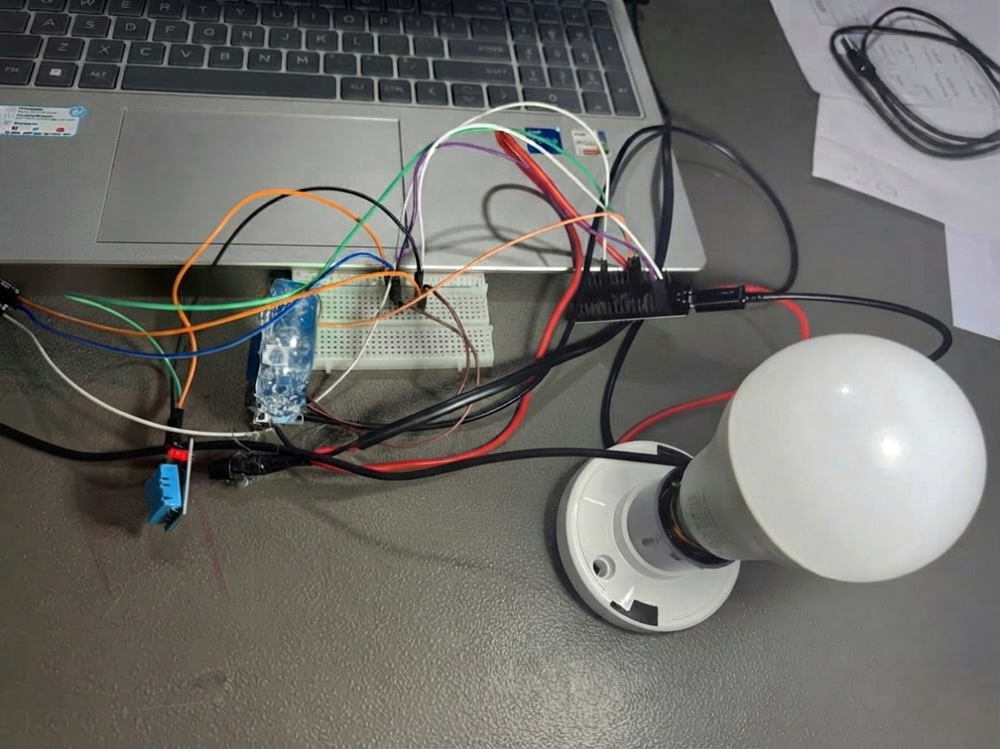
In Arduino IDE, I wrote the ESP32 sketch and set up the credentials it needed at the top: the Wi-Fi SSID and password, the Firebase Web API key, the Realtime Database URL, and the email/password of the Firebase Authentication user the board signs in as before it's allowed to read or write any data. The DHT11 is read once per cycle alongside the LDR.
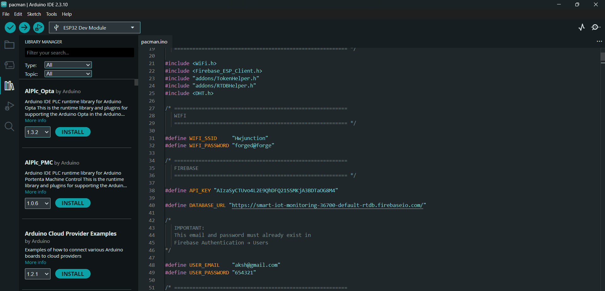
#include <DHT.h>
#define DHTPIN 4
#define DHTTYPE DHT11
DHT dht(DHTPIN, DHTTYPE);
dht.begin(); // in setup()
float temperature = dht.readTemperature(); // °C
float humidity = dht.readHumidity(); // %
if (isnan(temperature) || isnan(humidity)) {
Serial.println("DHT11 read failed, skipping this cycle");
return;
}I mapped out the pins for the LDR, relay, and DHT11, created the Firebase data/auth/config objects, and used the Serial Monitor to confirm the board was reading real values and preparing each payload correctly — LDR reading, temperature, humidity, current mode, and bulb state — before trusting it to actually send anything.
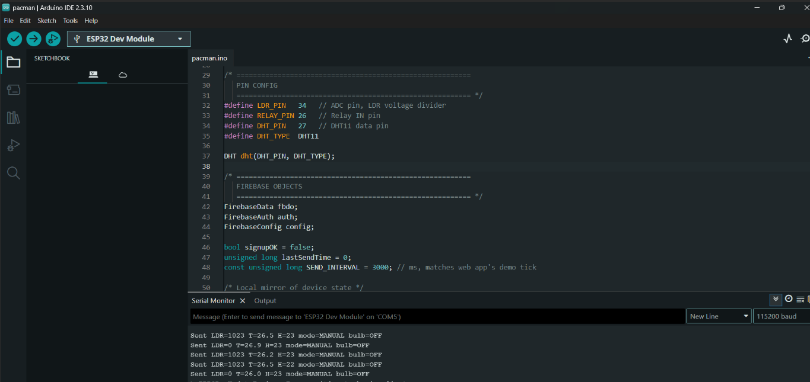
#define LDR_PIN 34
int ldrValue = analogRead(LDR_PIN); // 0–4095 on the ESP32's 12-bit ADC
Serial.printf("LDR=%d\n", ldrValue);In Manual mode, the Bulb ON and Bulb OFF buttons on the dashboard write directly to /settings/mode ("manual") and /control/bulbCommand (true/false). The ESP32 keeps a live Firebase stream open on /control, so the moment the dashboard writes a new command it is pushed to the board and applied to the relay — no polling delay.
if (Firebase.readStream(fbStream)) {
if (fbStream.streamPath() == "/control" && fbStream.dataPath() == "/bulbCommand") {
bulbState = fbStream.boolData(); // dashboard button pressed
}
}
...
if (mode == "manual") digitalWrite(RELAY_PIN, bulbState ? HIGH : LOW);In Automatic mode, the firmware instead compares the live reading from the LDR module against a threshold value set on the dashboard. Covering the LDR blocks light from reaching it, so its reading drops below the threshold — the ESP32 reads this as "it's dark now" and automatically switches the bulb ON. Uncovering it lets light back in, the reading rises back above the threshold, and the ESP32 automatically switches the bulb OFF again.
if (mode == "auto") {
bulbState = (ldrValue < ldrThreshold); // dark -> ON, bright -> OFF
}
digitalWrite(RELAY_PIN, bulbState ? HIGH : LOW);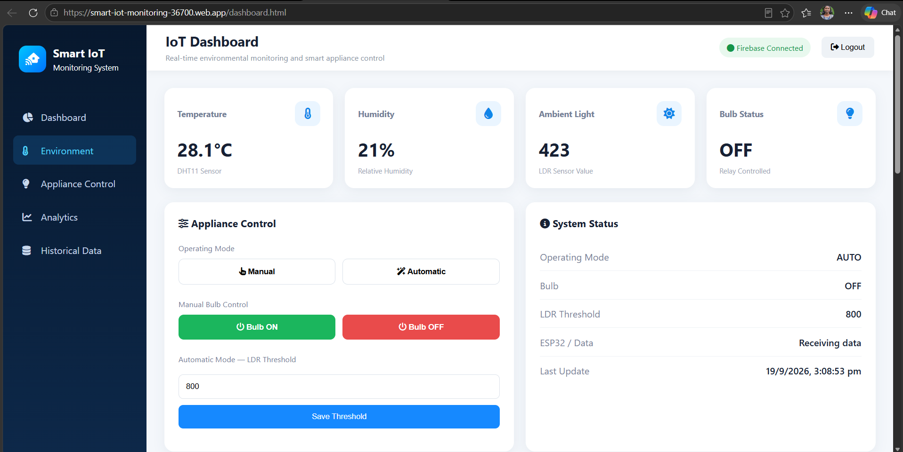
| Manual mode | Automatic mode | |
|---|---|---|
| Who decides the bulb state | The person, via the dashboard buttons | The firmware, by comparing the LDR reading to the threshold |
| Firebase field | settings/mode = "manual" | settings/mode = "auto" |
| Relay driven by | control/bulbCommand | ldrValue < settings/ldrThreshold |
| Switched from the dashboard with | Bulb ON / Bulb OFF buttons | The Manual/Automatic toggle switch |
To pick a usable threshold, I watched the raw LDR reading on the Serial Monitor under normal room lighting versus with the sensor fully covered, and used the midpoint between the two as the starting threshold — 800, the value shown on the dashboard in the screenshot above. Because settings/ldrThreshold is a normal database field rather than a constant baked into the firmware, it can be recalibrated for a different room or lighting condition directly from the dashboard, without re-flashing the ESP32.
Every reading cycle (roughly every 2 seconds), in addition to overwriting the single /current snapshot, the firmware also pushes a new entry under /history — Firebase's push() generates a unique, chronologically-ordered key for each entry automatically, so nothing is ever overwritten and the full sequence of readings is preserved for the table, the chart and the CSV export.
FirebaseJson entry;
entry.set("temperature", temperature);
entry.set("humidity", humidity);
entry.set("ldr", ldrValue);
entry.set("bulbStatus", bulbState);
entry.set("mode", mode);
entry.set("timestamp/.sv", "timestamp"); // Firebase server-side timestamp
Firebase.pushJSON(fbData, "/history", entry);history/
-NxY7qzA3f8k2Lm9p0Qr/
temperature: 29.4
humidity: 61
ldr: 742
bulbStatus: true
mode: "auto"
timestamp: 1730454600123
-NxY7r1B8d7h4Nq2s1Rt/
temperature: 29.3
humidity: 60
ldr: 910
bulbStatus: false
mode: "auto"
timestamp: 1730454602140Each pushed entry records exactly the fields the checklist asks for: a timestamp, temperature and humidity, the LDR/light-level value, and the bulb status and operating mode at that moment.
The dashboard also keeps a running history: temperature, humidity, and ambient light trends charted over time (using renderHistoryChart() from Task 4's dashboard.js, listed in full above), plus a full historical data table I can scroll through — turning the ESP32 into a proper logged environmental monitor rather than just a live readout.
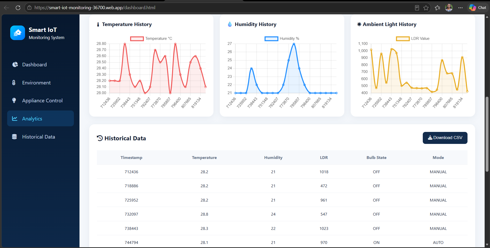
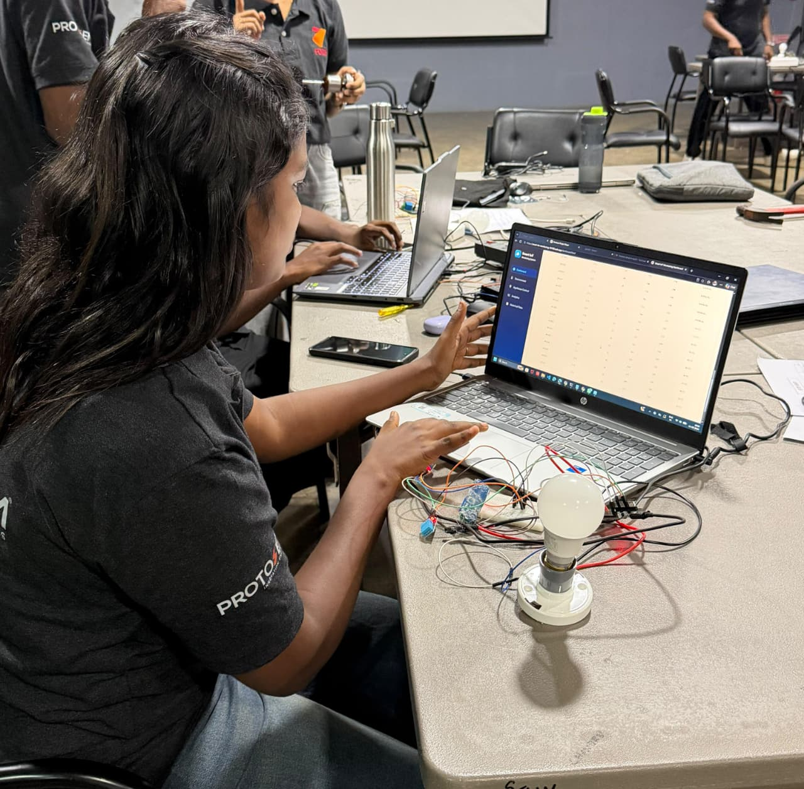
The Download CSV button (code listed in full under Task 4's dashboard.js) builds a CSV file entirely in the browser from the same history rows the chart and table use — no server-side export step is needed — and triggers a normal file download.
A downloaded file looks like this:
Timestamp,Temperature (C),Humidity (%),LDR,Bulb Status,Mode
2026-10-31T18:30:00.123Z,29.4,61,742,ON,AUTO
2026-10-31T18:30:02.140Z,29.3,60,910,OFF,AUTO
2026-10-31T18:30:04.158Z,29.3,60,905,OFF,AUTOEach row matches one pushed /history entry, confirming the exported file genuinely contains the recorded sensor data rather than placeholder values.
With the firmware uploaded and confirmed on the Serial Monitor, the next check was to see the whole pipeline working together in one place — the wired ESP32 setup right next to the live dashboard, both running at the same time. The ESP32 on the breadboard reads its sensors and writes straight into the Firebase Realtime Database, while the dashboard open on the laptop reads from that exact same database, so any change on the hardware side shows up on the browser within a second or two, with no manual refresh needed.
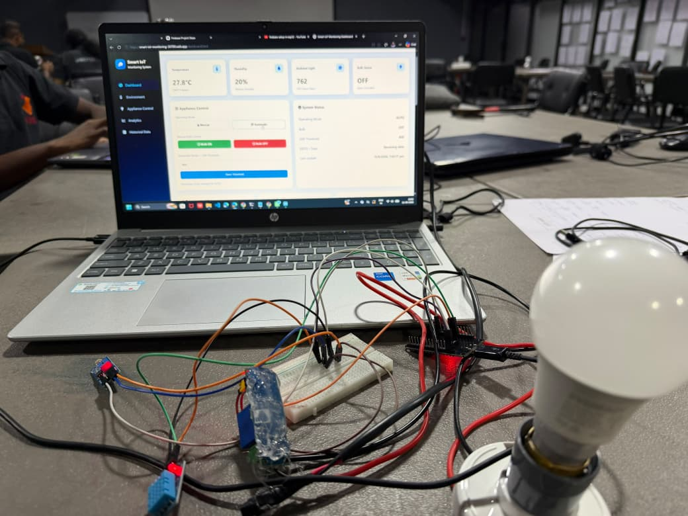
| Problem | Cause | Solution |
|---|---|---|
DHT11 occasionally returned NaN | The DHT11 can only be read reliably about once a second and is sensitive to timing | Added an isnan() check that skips and retries the cycle instead of pushing an invalid reading to Firebase |
| Bulb flickered rapidly in Automatic mode right at the threshold | The LDR reading hovers around the threshold in borderline light, so the relay switched on every small fluctuation | Treated this as a known limitation (see below) and noted hysteresis (a small on/off gap around the threshold) as a future improvement |
Writes to the database failed with PERMISSION_DENIED from the ESP32 | The device wasn't signed in to Firebase Authentication before attempting to write | Confirmed Firebase.begin() with the device's email/password completed before the first write, and checked Firebase.ready() |
| History grew very large over long test runs | push() never deletes old entries by itself | Limited the dashboard's live listener with limitToLast(50) so the table and chart stay fast regardless of how much history accumulates |
/history grows indefinitely in the database with no automatic pruning or archiving policy./history entries automatically.This task was where the project stopped being just "a device with sensors" and became a real product: live temperature and humidity on a dashboard I could open from any browser, a bulb I could switch manually or let respond automatically to the LDR, and a logged history I could chart or export as CSV. Structuring the database into current/history/settings/control before writing a single line of firmware meant the ESP32 code always knew exactly where to read and write, and logging every reading to history instead of only overwriting "current" is what made the chart and CSV export possible later — a decision that had to be made on day one, not added afterward.
Result: the ESP32 and its sensors fully integrated with the Firebase dashboard from Task 4 — live readings, working bulb control in both Manual mode and an Automatic mode driven by the LDR's ambient-light threshold, and a logged, chartable, CSV-exportable history, all behind the login screen.
Access the source code and documentation for Task 5 — the ESP32 firmware (DHT11, LDR, relay, Firebase streaming and logging), wiring photos and the demo videos.
View GitHub Repository ↗Splitting this into two tasks — build the platform first, then connect the hardware — turned out to be the most useful decision of the whole project.
firebase login, firebase init hosting, firebase deploy — is a genuinely quick way to go from a blank project folder to a live, public URL.This project made the gap between "a device with sensors" and "a real product" much clearer to me. Task 4 was almost entirely about infrastructure — hosting, login, and a database schema — before a single sensor reading existed. Task 5 was where it actually became a product: real temperature and humidity on a live dashboard, a bulb I could switch from a browser in Manual mode or let respond automatically to the LDR sensor in Automatic mode, and a history I could look back through or export. Seeing the same Firebase project serve both the web app and the ESP32 firmware helped me understand backends as something shared across multiple kinds of clients, not just "a website's database." That's a pattern I expect to reuse in almost every connected project from here on.